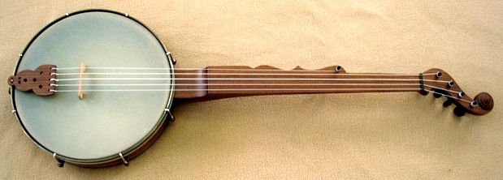
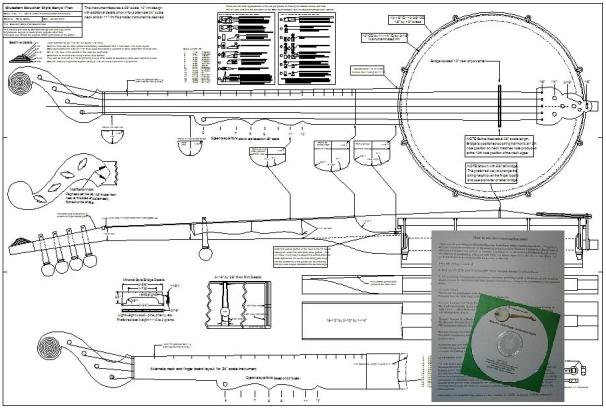
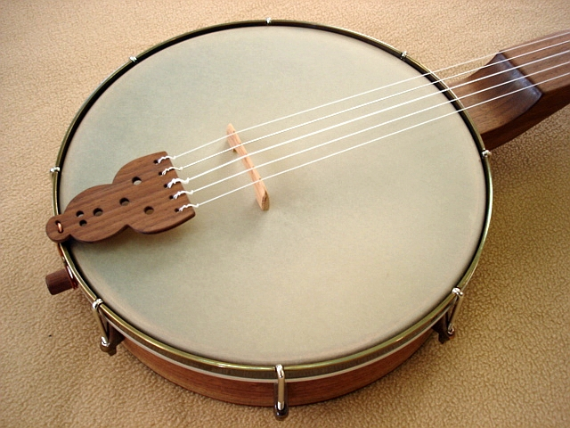

Select your area of interest:
Home* Lap Steel* 3 String Guitar* "Regular" Guitar* Violin* Bass*Banjo* Mandolin* Ukulele* Home Recording* Links
Open Back Banjo:
Traditional & progressive design & construction information
Boucher Early Minstrel Banjo (construction guide on CD & full size plan available)Frank Profitt Mountain Banjo
Bluestem Mountain Banjo Nouveau
Bluestem Artisan Mountain Banjo
Bluestem Open Back Banjo Nouveau
Bluestem Wine Box / Hand Drum Banjo
Open Back Banjo Design Primer
General Banjo Construction Information
Open Back Banjo Setup Guide
“Why can’t I get this thing to play in tune?” (more than you wanted to know about equal temperament)
Bluestem Open Back Banjo (construction guide on CD & full size plan available)
Bluestem Workingpersons 11 Slot Head Open Back Banjo (construction guide on CD & full size plan available)
Bluestem Wood Top Banjo Information (full size plan available)
*****************************************
William E. Boucher Jr. (pronounced Boo-shay) Early Minstrel Banjo
*****************************************

William E. Boucher (pronounced Boo-shay) Jr. (1822–1899) rose to prominence as a leading producer of banjos in Baltimore, Maryland from the late 1840’s to 1860. Exact dates are difficult to determine as there is a lack of good information for this time period. His father (of the same name) also worked in the musical instrument trade, which complicates the issue of which one actually produced the first Boucher banjos. His banjo production most likely came about as a natural extension of his existing business where he made or sold drums, violins, and guitars.
Although you'll often find reference to this style of instrument as "Minstrel Banjo", it was often associated with other musical forms and as such the design can be more correctly referred to as "Early Banjo".
Boucher was most likely the first maker to incorporate a head tensioning system on banjos by incorporating the hook and wing nut tensioning system as used his drum designs, although that claim isn’t a certainty as Boucher never applied for a patent for his design. In any case it can certainly be said that Boucher’s use of a manual head tensioning system certainly made performance on the banjo much less problematic and it is generally agreed upon that his instruments were very popular among the professional players of the day.
Although there are only around 40 documented extant Boucher banjos known of, there are a few stylistic elements that most of them have in common; the elegant scroll peg head with beehive adornment at the scroll’s tip, double Ogee profiling at the fifth string side of neck, some variant of the head tensioning design, and a rim usually around 12” diameter and 3" in depth.
It’s generally believed that Boucher wanted to standardize some aspects of the banjo, and many examples from other makers demonstrate that most banjos at the time when Boucher first started producing his were likely made as a result of a customer’s desires with little thought given to any standard specifications.
Pot design and head tensioning system
The rim was generally made from a single 1/4” thick piece of oak that was steam bent and joined with a tapered lap joint. The progression in his rim designs most likely follow the evolution of his head tensioning system refinements. The earliest forms had oval cutouts midway across the rim to allow wing nuts to be mounted close to the rim while still allowing them to be turned to tighten the head. This ensured that the wing nuts would not poke uncomfortably into the player. Later iterations featured deep notches in the bottom edge of the rim to accomplish the same function. Still later versions featured cast brackets much the same as is seen on the modern instrument of today.The double ogee neck
The Boucher banjos most distinctive adornment was the double ogee neck, although the ogee (on some, but not all Bouchers) also serves as an indicator of note positions. The fifth peg hump is ideally placed at the 5th note position and the points of the ogee indicate the 8th note and 12th note octave position respectively. An examination of the extant instruments indicates that some, but not all of the examples bear this relationship out; it is theorized by some that this non-uniformity to a standard may have been due to Boucher having his instruments produced by other makers who may not have understood the ogee’s function beyond its being a decorative flourish.Complicating the matter, the scale length was not uniform (most likely due to individual customer scale length requests) and Bouchers can be found with scale lengths from as little as 24” to as much as 35”. This would obviously change the ogee point positions for any given instrument and could certainly lead to confusion when made by one of Boucher's sub-contractors who may have considered the ogee only a decorative flourish.
Stylistic elements
Most prominent among the stylistic elements of the Boucher banjo is the elegant scroll peg head with beehive adornment at the scroll’s tip, and the double ogee design of the neck. The rim was usually formed from a single 1/4” thick piece of bent oak, but sometimes painted with a faux grain pattern on the outer surface with the inner surface often finished with a dark red paint. A rather wide sculpted wooden tailpiece was used to anchor the strings. Early Boucher banjos featured a neck composed of three flat sawn pieces of wood with the top piece being the playing surface. Later examples may be seen with the addition of a separate finger board as seen on instruments from other makers of the time. The Boucher finger boards were quite wide, being up to 1-5/8” in width at the nut and up to 2-3/4” wide at the heel.The Conceptualized Boucher Early Banjo
I realized there was a need for a construction diagram for a Boucher Style banjo from seeing many inquiries about dimensions on various forums on the internet. Reproductions of this type of banjo are desirable for everything from period music performance to authentic period instruments for Civil War re-enactments. I developed the plan shown here as a “conceptualized Boucher” which would be very close to period correct, but "modernized" a bit by incorporating a commercially produced and widely available Remo Renaissance head, as well as using a 26” scale length that would be more comfortable to play by today’s banjo players. The brackets and nuts are reminiscent of the later Boucher examples and can be easily reproduced in the home shop from raw brass bar stock and patina finished with a readily available commercially produced product if desired. Standard round hooks are specified as they are much stronger than formed and threaded brass would be. They can be sanded and painted if desired as many of the extant Bouchers have remnants of paint on them. The original Bouchers had no separate finger board, so the plan details that method of neck construction, although a thin layer of ebony can be added for a finger board surface if desired.Bluestem Boucher Style Banjo features:
- 26" scale length
- 12” by 3-1/4” by 3/8” thick multiply walnut rim
- Strung with readily available Aquila Nylgut Minstrel strings
- 12” Remo Renaissance medium crown head
- 1/2” by 1/8” raw brass patina finished tension hoop, taper lapped and screw bonded end joint
- 8 standard #8 by 26 threaded 2-1/2” long J hooks
- 8 hand shaped Boucher style raw brass patina finished bracket shoes
- 8 hand shaped Boucher style raw brass patina finished tensioning nuts
- Simple hand shaped custom wrench for the square tapered nut design (makes an excellent necklace, too!)
- Hand shaped raw brass patina finished tapered square hole head tensioning wrench
- Neck composed of flat sawn and joined sections like the original Boucher banjo design
- Double Ogee neck design reflects actual note positions
- Seven segment 7/16” tall by 1-3/8” diameter Beehive finial
- 5 standard ebony violin friction pegs
- Entire banjo weighs in at less than 4 pounds
The Plan
The plan is based on an examination of several representative Boucher banjos and is a fair representation of his work. Although I do not regularly build this style of instrument I wanted to be able to promote its construction, so I’m making the plan available to anyone who desires to make one. The plan has all of the details to build a banjo representative of the Boucher design and has many notes included on the plan as explanation for design points and for suggesting modifications that may be desirable. The plan also features a complete full size 24" scale neck for anyone desiring a shorter overall scale if it is desired to construct the banjo for a different tuning range or string gauge.You can purchase the building guide package, which includes the full size 39-1/2" by 26-1/2" printed plan as well as a CD containing 550 sequential photos documenting the construction of the instrument shown here with accompanying descriptive text of each photo. A full size drawing is nice to have, and eliminates the many steps involved in scaling up a drawing to actual size. A full size print also permits you to place semi-rigid plastic over specific areas and trace over it with a fine point permanent marker to create templates to transfer directly to your work. Details for the guide package are listed below.
Here are a few Boucher detail items that you may find useful.

Click HERE Boucher style bracket shoe fabrication guide in PDF format.
Click HERE for Boucher style nut fabrication guide in PDF format.
Click HERE for Boucher Style Early Banjo peg head, tailpiece, and bridge template in PDF format.
Bluestem Boucher Style Early Banjo Construction Guide on CD with full size plan!
The guide is currently priced at $25 with first class US post office shipping included within the United States, the cost is $30 to locations outside of the United States. Your purchase allows me to pay for the tremendous bandwidth and usage this site gets without the need to sell advertisement space.Paypal:
Please e-mail me with "Bluestem Info Request" in the subject line if you are interested in purchasing one of the guide packages by check or postal money order. I accept payment in any form you wish, although personal checks take an additional 10 days to clear my bank before the guide is shipped.
The CD contains 550 photos, a 20 page descriptive guide to accompany the sequentially presented photos of the construction process, and other pertinent information relating to the building of this banjo.
A few additional photos of the banjo built from the Bluestem Boucher Style Early Banjo construction guide:



YouTube overview of the Bluestem Boucher Style Banjo construction guide:
*****************************************
Please visit my other website designed to provide information on musical instrument construction. There are free plans as well as construction tips and techniques available at the present time.
Rudy's Sketchbook of Musical Instrument Plans, Ideas, and Inspiration
*****************************************

If you desire to contact me about Bluestem Strings products:
Due to scoundrelous spammers actively mining sites for e-mail addresses, I'm forced to include the following text version of my e-mail address meant to confuse the automated robo-search of websites for e-mail addresses. Please e-mail me at:rcordle (substitute the at symbol here) fastmail (substitute the dot here) fm
Please include "Bluestem Info Request" in the subject line, Thanks!